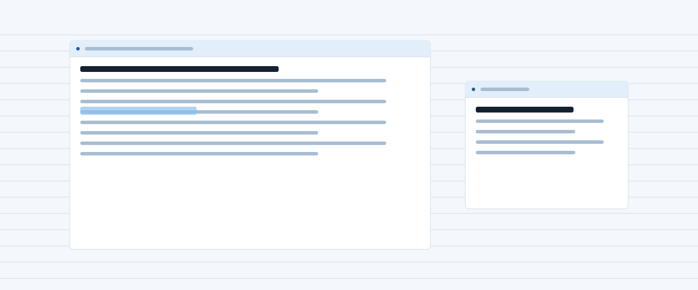

Component
Hero
The opening of a page: a heading at the largest size, a paragraph, one or two buttons, and beside them whatever the template leads with. Every template has its own hero form; this page shows Modern Frosty's, then two variants that move.
Preview
The hero as the overview uses it. The heading takes --font-size-hero; the paragraph is muted and capped at a readable measure.
Cold, clear and out of the way.
Near-white with a cast of ice, hairlines instead of shadows, one deep blue for the things you can click and one warm ember for the things that are live. Frost appears only where content scrolls under something: the dock above you, a dialog, a menu. Same markup as every other template here.
$cp -r templates/modern-frosty my-site
What frost is for
Frost is a translucent fill and a low blur. It tells you something is above the page rather than on it.
- The bar you scroll under: yes.
- A dialog over the page: yes.
- A card sitting in the flow: no. A card gets a hairline.
Scroll this note. The toolbar stays, and the lines pass under it.
Every colour is a token, so the ice turns to slate when the scheme does. The lines on this sheet are one hairline colour repeated.
The type is Geist at 16px, semibold for headings with the tracking pulled in, mono for anything that is a label rather than a sentence, and one line of Newsreader italic where a heading wants a change of voice.
<section class="hero">
<div class="stack">
<h1>Cold, clear and <em>out of the way.</em></h1>
<p>Near-white with a cast of ice, hairlines instead of shadows, one deep blue for the things you can click and one warm ember for the things that are live. Frost appears only where content scrolls under something: the dock above you, a dialog, a menu. Same markup as every other template here.</p>
<div class="modern-frosty-flare">
<p class="modern-frosty-command"><span>$</span><code>cp -r templates/modern-frosty my-site</code><span class="modern-frosty-caret"></span></p>
</div>
<div class="row">
<a class="btn btn-primary btn-lg" href="../index.html">Get started</a>
<a class="btn btn-lg modern-frosty-quiet" href="../../example/index.html">See the example app</a>
</div>
</div>
<div class="modern-frosty-flare">
<div class="modern-frosty-note modern-frosty-scroll" aria-label="A note, as the example app draws it">
<div class="modern-frosty-toolbar"><b>Template notes</b><span>edited today</span><span>saved</span></div>
<div class="modern-frosty-sheet">
<h2>What frost is for</h2>
<p>Frost is a translucent fill and a low blur. It tells you something is <mark>above</mark> the page rather than on it.</p>
<ul>
<li>The bar you scroll under: yes.</li>
<li>A dialog over the page: yes.</li>
<li>A card sitting in the flow: no. A card gets a hairline.</li>
</ul>
<p class="muted">Scroll this note. The toolbar stays, and the lines pass under it.</p>
<p>Every colour is a <a href="../theme.html">token</a>, so the ice turns to slate when the scheme does. The lines on this sheet are one hairline colour repeated.</p>
<p>The type is Geist at 16px, semibold for headings with the tracking pulled in, mono for anything that is a label rather than a sentence, and one line of Newsreader italic where a heading wants a change of voice.</p>
</div>
</div>
</div>
</section>Variants
Text only
The same hero with nothing beside the words. Add hero-text: the grid becomes one column and the stack is capped at a readable measure. Every template carries this variant with the same class.
Words only
A hero with nothing beside it.
One column, the text measure capped so the lines stay readable, and everything else the hero has: the kicker, the heading at the hero size, the paragraph, the buttons.
<section class="hero hero-text">
<div class="stack">
<p class="kicker">Words only</p>
<h1>A hero with nothing beside it.</h1>
<p>One column, the text measure capped so the lines stay readable, and everything else the hero has: the kicker, the heading at the hero size, the paragraph, the buttons.</p>
<div class="row">
<a class="btn btn-primary btn-lg" href="../index.html">Get started</a>
<a class="btn btn-lg" href="index.html">Browse components</a>
</div>
</div>
</section>Image only
A hero that is one picture, edge to edge, cropped to a wide band. Add hero-image and give it a single <img> (or a <figure>) with a real alt, since there is no heading to say what it is. Every template carries this variant with the same class.

<section class="hero hero-image">
<img src="../../assets/hero.svg" alt="The template's hero picture, filling the width" width="1200" height="500">
</section>The prompt
Centred, with a live dot in the kicker, a serif italic in the heading and a command line that types itself out on the ink slab while the caret blinks. Everything in the stack rises in turn; the command starts typing once the heading is in. Add modern-frosty-prompt to the hero. Under prefers-reduced-motion the global rule cuts every animation to nothing, so the hero is simply there.
Ready in one command
Cold, clear, typed out.
The stack rises a line at a time. The slab is the page turned over; the command on it is typed at a steady twenty-six characters, and the caret keeps blinking after.
$sheaf new "Garden, autumn"
<section class="hero modern-frosty-prompt">
<div class="stack">
<p class="kicker"><span class="modern-frosty-live"></span>Ready in one command</p>
<h1>Cold, clear, <em>typed out.</em></h1>
<p>The stack rises a line at a time. The slab is the page turned over; the command on it is typed at a steady twenty-six characters, and the caret keeps blinking after.</p>
<div class="modern-frosty-flare">
<p class="modern-frosty-command"><span>$</span><code>sheaf new "Garden, autumn"</code><span class="modern-frosty-caret"></span></p>
</div>
<div class="row">
<a class="btn btn-primary btn-lg" href="../index.html">Get started</a>
<a class="btn btn-lg modern-frosty-quiet" href="../../example/index.html">See the example app</a>
</div>
</div>
</section>The defrost
The note beside the heading starts frosted over, and the frost lifts from the top down as the page loads: a pane the colour of the navbar slides off the note in a second and a half, and the toolbar is the first thing to come clear. Once. Add modern-frosty-defrost to the hero; the global prefers-reduced-motion rule stops it.
Cleared from the top down.
The pane over the note is the frost token, a fill and a blur. It slides off toward the bottom edge and is gone, leaving the note as it always was.
What was under the frost
Nothing changed while you could not see it. The lines are the same lines.
Reload to watch it clear again.
<section class="hero modern-frosty-defrost">
<div class="stack">
<h1>Cleared from <em>the top down.</em></h1>
<p>The pane over the note is the frost token, a fill and a blur. It slides off toward the bottom edge and is gone, leaving the note as it always was.</p>
<div class="row">
<a class="btn btn-primary btn-lg" href="../index.html">Get started</a>
<a class="btn btn-lg modern-frosty-quiet" href="../../example/index.html">See the example app</a>
</div>
</div>
<div class="modern-frosty-flare">
<div class="modern-frosty-note">
<div class="modern-frosty-toolbar"><b>Thawing</b><span>just now</span><span>saved</span></div>
<div class="modern-frosty-sheet">
<h2>What was under the frost</h2>
<p>Nothing changed while you could not see it. The lines are the same lines.</p>
<p class="muted">Reload to watch it clear again.</p>
</div>
</div>
</div>
</section>Classes
The rules live in css/global.css: the hero under /* == utilities == */ with the other layout helpers, the variant under /* == hero variants == */.
| Class | Purpose |
|---|---|
.hero | The opening section: a grid of a text stack and, in most templates, a picture or a piece of flare |
.hero .stack | The kicker, heading, paragraph and button row |
.hero .row | The buttons |
.hero.modern-frosty-prompt | Centred hero; the stack rises, the command types |
.modern-frosty-command | The ink command line (see flare) |
.modern-frosty-live | The ember dot with its ping (see flare) |
.hero.modern-frosty-defrost | The note starts under frost that slides off downward on load |
.hero.hero-text | Words only: one column, capped measure (every template) |
.hero.hero-image | Picture only: one image edge to edge, cropped 21:9 (every template) |
Notes
- One
<h1>per page: the hero's heading is it. The kicker above it is a<p>, not a heading. - Above
48remthe hero is two columns, text then picture; below, it stacks. The variant keeps whatever layout its markup implies. - The variant is CSS only. Its animation is declared with
bothfill, so the page is correct before it starts and after it ends, and the globalprefers-reduced-motionrule stops it. - Another template ignores
modern-frosty-promptand shows its own hero; any flare markup inside sits in the template's flare wrapper so a swap can drop it.